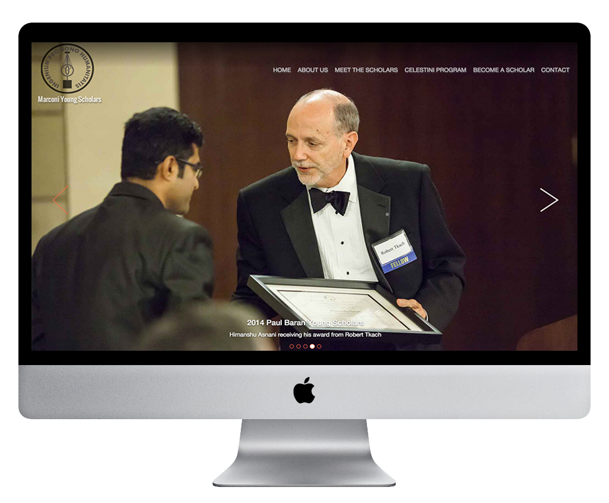
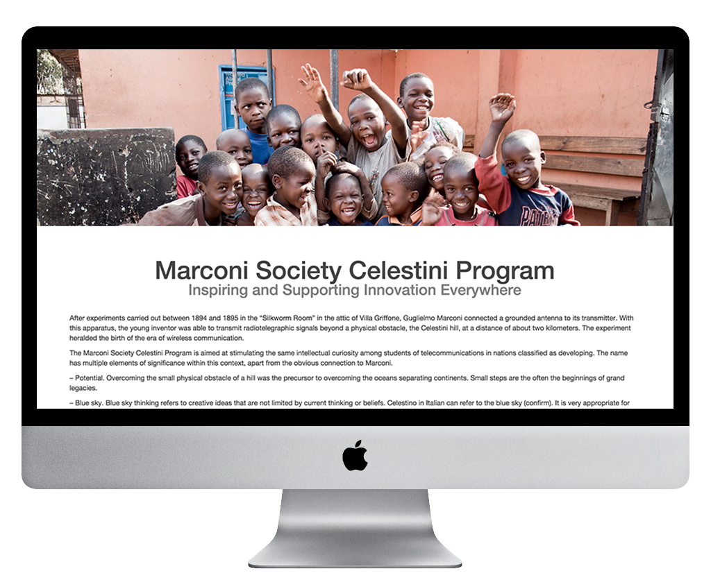
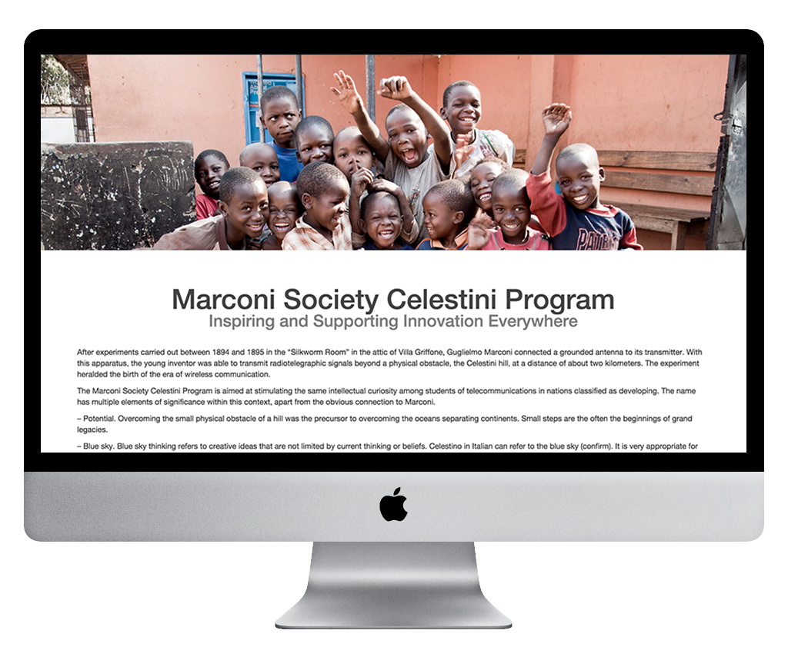
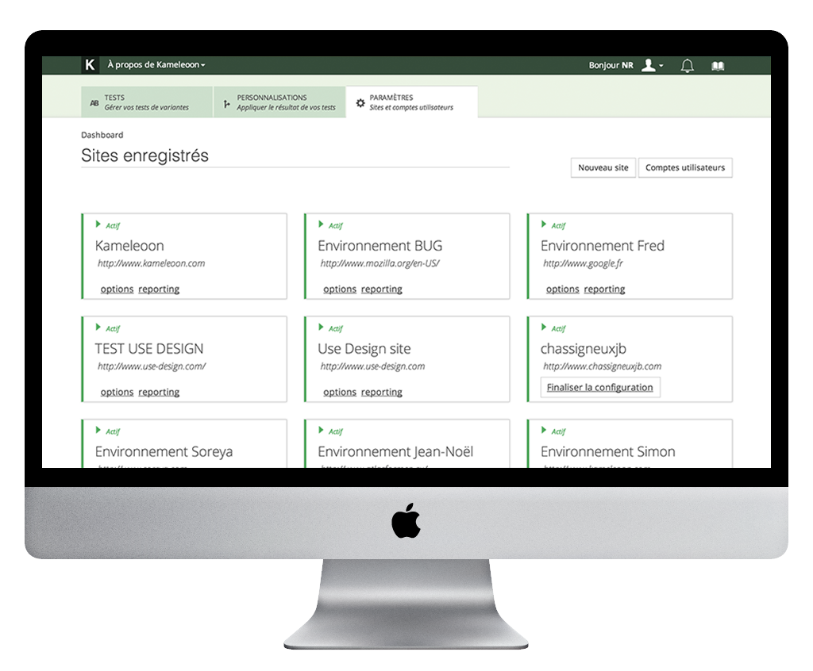
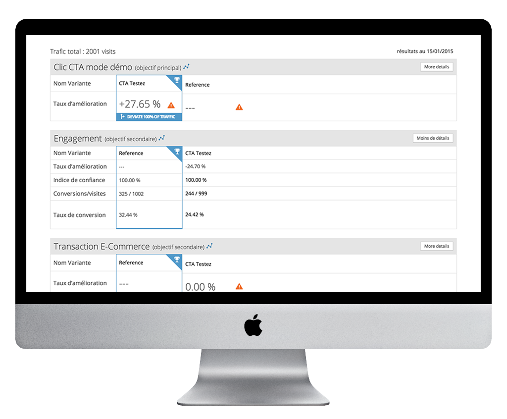
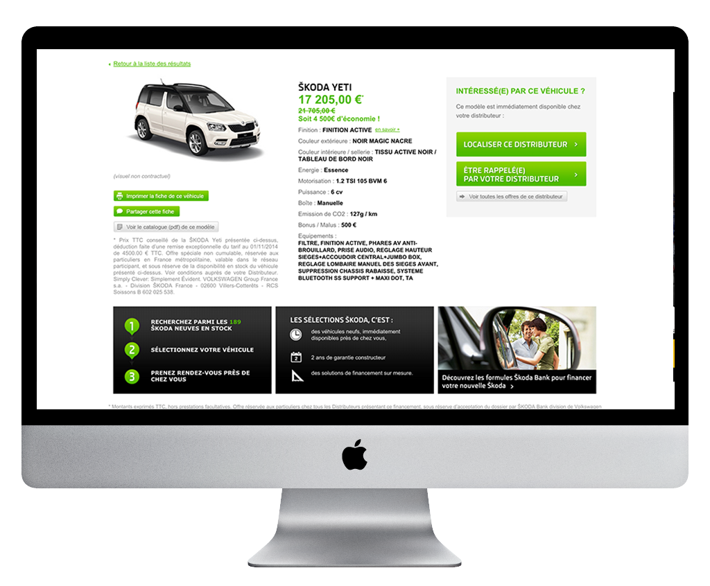
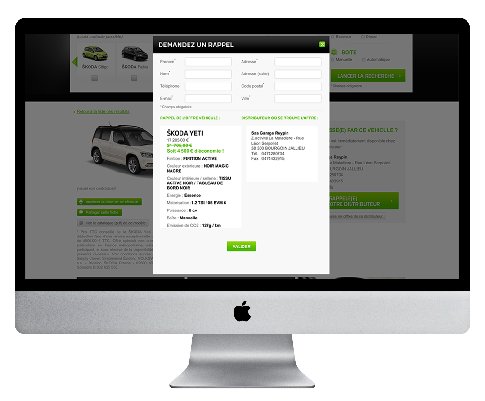

Work





Marconi Society Young Scholars
Marconi Young Scholars are individuals who have, at an early age, already demonstrated exceptional engineering or scientific research
Web site in wordpress with my own template made with bootstrap I used HTML, CSS, PHP and some JQuery.

Kameleoon Web Site
Kameleoon A/B Testing company who offers the simple way to test changes in the web page against the current design and determine which ones produce positive results.
Front End Development with HTML, CSS and jQuery from the PSD design.


Skoda Web Site
Front End development in an environment of PHP, MVC Symfony Framework and Tortoise SVN for Skoda’s web site.
I newsletters and landing pages for the offers.


Les Selections Skoda
Front End development in an environment of PHP, MVC Symfony Framework and Tortoise SVN for Skoda’s web site.